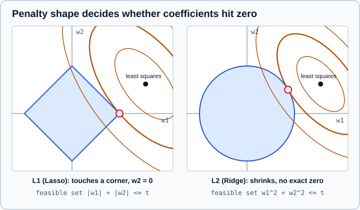

Linear Models and Logistic Regression in scikit-learn
|
This content was generated with the assistance of AI and should be verified against the official documentation before being relied on in production. |
A linear model predicts a weighted sum of the features, plus an intercept. scikit-learn’s sklearn.linear_model module
holds the whole family: ordinary least squares, the regularised variants Ridge, Lasso and ElasticNet, logistic regression
for classification, stochastic gradient descent for large data, generalised linear models for counts and positive
amounts, and robust and quantile regression. They are fast, scale to millions of rows, and are the best first model for
most tabular problems. This page covers each of them with their options, the solver choices, the interpretation of
coefficients and the pitfalls. It targets scikit-learn 1.9 (1.9.1) with NumPy 2.5 and pandas 3.1,
and was checked in October 2026; every example was run with Python 3.13 and scikit-learn 1.9.1, and the printed output is
the real output. Examples target Python 3.13 or 3.14 and were run on Python 3.13. Two penalty-related changes of the last releases (the penalty parameter of LogisticRegression in 1.8,
the removal of multi_class) break a lot of older code and are explained in Logistic regression and
Where older code breaks.
All models are estimators with the usual fit, predict and score methods, learned coef_ and intercept_
attributes, and a role as regressor or classifier. The vocabulary is in the
Glossary of Key Terms.
The family at a glance
| Estimator | Penalty and loss | Use it for |
|---|---|---|
|
Least squares, no penalty |
A baseline; interpretable effects when features are few and not collinear. |
|
Least squares with an L2 penalty |
Many correlated features; stable coefficients; a strong default. |
|
Least squares with an L1 penalty |
Sparse models: feature selection built into the fit. |
|
L1 and L2 penalty together |
Sparse models with groups of correlated features. |
|
L1/L2 mixed norm over several targets |
The same features selected for all targets. |
|
Greedy or path algorithms |
Few non-zero coefficients, more features than samples. |
|
Bayesian priors on the coefficients |
Regularisation chosen from the data, predictive uncertainty. |
|
Log loss with L2, L1, elastic net or no penalty |
Classification with probabilities; binary and multiclass. |
|
Many losses, optimised by stochastic gradient descent |
Very large data, streaming data with |
|
Deviance of an exponential-family distribution, log link |
Counts, positive amounts, insurance-style data. |
|
Pinball loss |
Conditional quantiles, prediction intervals. |
|
Robust losses or sampling |
Outliers in the target or the features. |
Ordinary least squares
LinearRegression finds the weights \(w\) and intercept that minimise the sum of squared residuals:
\[\min_w \lVert y - Xw \rVert_2^2\]
It uses scipy.linalg.lstsq on dense data and a sparse least-squares routine on sparse data. It has no hyperparameter
to tune, only fit_intercept, positive=True to force non-negative coefficients, copy_X, n_jobs, and a tol
(since 1.7, applied to dense data too from 1.9) that is the cut-off of lstsq for small singular values. The coefficients
are exact for the training data but can be wildly unstable when features are almost collinear: a small change in the
sample changes them a lot. The example below makes the second feature an almost exact copy of the first and fits four
models. Only the sum of the two coefficients is determined by the data, and each model splits it differently.
import numpy as np
from sklearn.linear_model import ElasticNet, Lasso, LinearRegression, Ridge
rng = np.random.default_rng(0)
n = 100
x1 = rng.normal(size=n)
x2 = x1 + rng.normal(scale=0.01, size=n) # an almost exact copy of x1
X = np.column_stack([x1, x2])
y = 3 * x1 + rng.normal(scale=0.5, size=n) # only the shared signal matters: 3 * x1
models = {
"OLS": LinearRegression(),
"Ridge(alpha=1)": Ridge(alpha=1.0),
"Lasso(alpha=0.1)": Lasso(alpha=0.1),
"ElasticNet(0.1, 0.5)": ElasticNet(alpha=0.1, l1_ratio=0.5),
}
for name, model in models.items():
model.fit(X, y)
print(f"{name:21s} coef={model.coef_.round(2)} sum={model.coef_.sum():.2f}")
# how stable is the coefficient of x1 when the sample changes?
for name, make in [("OLS", LinearRegression), ("Ridge(alpha=1)", lambda: Ridge(alpha=1.0))]:
coefs = []
for seed in range(5):
rows = np.random.default_rng(seed).integers(0, n, n) # a bootstrap sample
coefs.append(make().fit(X[rows], y[rows]).coef_[0])
print(f"{name:21s} coef of x1 over 5 bootstrap samples: {np.round(coefs, 2)}")Output with scikit-learn 1.9.1:
OLS coef=[1.16 1.83] sum=2.99
Ridge(alpha=1) coef=[1.49 1.49] sum=2.98
Lasso(alpha=0.1) coef=[2.88 0. ] sum=2.88
ElasticNet(0.1, 0.5) coef=[1.43 1.43] sum=2.86
OLS coef of x1 over 5 bootstrap samples: [ 1.99 1.34 10.74 -3.3 2.08]
Ridge(alpha=1) coef of x1 over 5 bootstrap samples: [1.47 1.47 1.52 1.49 1.51]Source: Ordinary least squares and Ridge regression.
Read the output as follows.
-
OLS splits the shared signal arbitrarily (1.16 and 1.83) and, over bootstrap samples, the coefficient of the first feature jumps between -3.3 and 10.7. The prediction is fine; the interpretation is not.
-
Ridge divides the effect equally (1.49 and 1.49) and is stable (1.47 to 1.52 over the same samples).
-
Lasso picks one of the two features and sets the other to exactly zero.
-
ElasticNet is in between: it shrinks both and keeps them together.
Ridge regression
Ridge adds a penalty on the squared size of the coefficients:
\[\min_w \lVert y - Xw \rVert_2^2 + \alpha \lVert w \rVert_2^2\]
alpha is the regularisation strength: 0 is ordinary least squares and large values shrink all coefficients towards zero
without ever making them exactly zero. The intercept is not penalised. The solver parameter chooses the algorithm:
| Solver | Notes |
|---|---|
|
Chooses by data type (default). |
|
Singular value decomposition. The most stable, slower, dense data only. |
|
Closed form through |
|
Iterative, suited to large or sparse data ( |
|
Stochastic average gradient. Fast when both samples and features are large; convergence is only guaranteed on features of similar scale. |
|
Only when |
All solvers except "svd" accept sparse data, but only "lsqr", "sag", "sparse_cg" and "lbfgs" support
sparse input when fit_intercept is true. RidgeCV selects alpha by efficient leave-one-out cross-validation (or by
the cv you pass), supports alpha_per_target, and stores the validation results when store_cv_results=True (the
old name was store_cv_values). RidgeClassifier encodes the labels as -1 and 1 and fits a ridge regression, a fast
classifier that has no probabilities.
Because the penalty depends on the size of each coefficient, the features must be on comparable scales. Put a
StandardScaler in a Pipeline in front of every regularised linear model.
Lasso and ElasticNet
Lasso replaces the squared penalty with the absolute value, which drives coefficients to exactly zero:
\[\min_w \frac{ 1 }{ 2n } \lVert y - Xw \rVert_2^2 + \alpha \lVert w \rVert_1\]
ElasticNet mixes both penalties, with l1_ratio \(\rho\) between 0 (ridge-like) and 1 (lasso):
\[\min_w \frac{ 1 }{ 2n } \lVert y - Xw \rVert_2^2 + \alpha\rho \lVert w \rVert_1 + \frac{\alpha(1-\rho)}{ 2 } \lVert w \rVert_2^2\]
Both are solved by coordinate descent. The reason the L1 penalty creates zeros is geometric: the loss contours first touch the feasible region of the penalty. For the L1 diamond that is usually a corner on an axis, where one coefficient is zero; for the L2 disc it is a point where both are non-zero.

The example sweeps alpha on a problem with 30 features of which only 5 matter. Lasso removes the useless features as
alpha grows and is exactly right at alpha=10 (5 non-zero), while ridge keeps all 30 features and shrinks them.
alpha=100 is far too strong for both.
import numpy as np
from sklearn.datasets import make_regression
from sklearn.linear_model import Lasso, Ridge
from sklearn.model_selection import train_test_split
from sklearn.pipeline import make_pipeline
from sklearn.preprocessing import StandardScaler
X, y, true_coef = make_regression(n_samples=200, n_features=30, n_informative=5, noise=10.0, coef=True, random_state=0)
X_train, X_test, y_train, y_test = train_test_split(X, y, random_state=0)
print("truly informative features:", int((true_coef != 0).sum()))
for alpha in [0.01, 0.1, 1, 10, 100]:
lasso = make_pipeline(StandardScaler(), Lasso(alpha=alpha, max_iter=10000)).fit(X_train, y_train)
ridge = make_pipeline(StandardScaler(), Ridge(alpha=alpha)).fit(X_train, y_train)
print(
f"alpha={alpha:6.2f} "
f"lasso: {int((lasso[-1].coef_ != 0).sum()):2d} non-zero, test R2 {lasso.score(X_test, y_test):6.3f} | "
f"ridge: {int((ridge[-1].coef_ != 0).sum()):2d} non-zero, test R2 {ridge.score(X_test, y_test):6.3f}"
)Output with scikit-learn 1.9.1:
truly informative features: 5
alpha= 0.01 lasso: 30 non-zero, test R2 0.991 | ridge: 30 non-zero, test R2 0.991
alpha= 0.10 lasso: 29 non-zero, test R2 0.991 | ridge: 30 non-zero, test R2 0.991
alpha= 1.00 lasso: 11 non-zero, test R2 0.992 | ridge: 30 non-zero, test R2 0.991
alpha= 10.00 lasso: 5 non-zero, test R2 0.954 | ridge: 30 non-zero, test R2 0.983
alpha=100.00 lasso: 0 non-zero, test R2 -0.009 | ridge: 30 non-zero, test R2 0.779Source: Lasso and Elastic-Net.
Choosing alpha by hand is rarely needed because the CV estimators do it. LassoCV and ElasticNetCV compute the
whole regularisation path on a grid of alphas and pick the best by cross-validation (ElasticNetCV also searches
l1_ratio); RidgeCV uses leave-one-out. LassoLarsIC picks alpha with the AIC or BIC information criterion from a
single fit, which is much faster and tends to give sparser models. lasso_path returns the path itself, for plotting.
import numpy as np
from sklearn.datasets import make_regression
from sklearn.linear_model import ElasticNetCV, LassoCV, LassoLarsIC, RidgeCV, lasso_path
from sklearn.model_selection import train_test_split
from sklearn.pipeline import make_pipeline
from sklearn.preprocessing import StandardScaler
X, y = make_regression(n_samples=200, n_features=30, n_informative=5, noise=10.0, random_state=0)
X_train, X_test, y_train, y_test = train_test_split(X, y, random_state=0)
ridge = make_pipeline(StandardScaler(), RidgeCV(alphas=np.logspace(-3, 3, 25))).fit(X_train, y_train)
lasso = make_pipeline(StandardScaler(), LassoCV(cv=5, random_state=0)).fit(X_train, y_train)
enet = make_pipeline(StandardScaler(), ElasticNetCV(l1_ratio=[0.2, 0.5, 0.8, 1.0], cv=5, random_state=0)).fit(X_train, y_train)
bic = make_pipeline(StandardScaler(), LassoLarsIC(criterion="bic")).fit(X_train, y_train)
print("RidgeCV alpha:", round(ridge[-1].alpha_, 3))
print("LassoCV alpha:", round(lasso[-1].alpha_, 3), "non-zero:", int((lasso[-1].coef_ != 0).sum()),
"grid size:", len(lasso[-1].alphas_))
print("ElasticNetCV alpha and l1_ratio:", round(enet[-1].alpha_, 3), enet[-1].l1_ratio_)
print("LassoLarsIC (BIC) alpha:", round(bic[-1].alpha_, 3), "non-zero:", int((bic[-1].coef_ != 0).sum()))
for name, model in [("ridge", ridge), ("lasso", lasso), ("elastic net", enet), ("bic", bic)]:
print(f"{name:12s} test R2 {model.score(X_test, y_test):.3f}")
# the whole regularisation path: five alphas from large to small
alphas, coefs, _ = lasso_path(StandardScaler().fit_transform(X_train), y_train, alphas=5)
print("alphas:", alphas.round(2))
print("non-zero coefficients along the path:", (coefs != 0).sum(axis=0))Output with scikit-learn 1.9.1:
RidgeCV alpha: 0.178
LassoCV alpha: 0.682 non-zero: 17 grid size: 100
ElasticNetCV alpha and l1_ratio: 0.682 1.0
LassoLarsIC (BIC) alpha: 1.523 non-zero: 6
ridge test R2 0.991
lasso test R2 0.992
elastic net test R2 0.992
bic test R2 0.991
alphas: [7.308e+01 1.299e+01 2.310e+00 4.100e-01 7.000e-02]
non-zero coefficients along the path: [ 0 4 5 22 29]Source: Setting the regularization parameter.
Notes on the output. LassoCV kept 17 coefficients non-zero although only 5 are informative: cross-validation
optimises prediction error, not selection, so it usually keeps more features than needed. LassoLarsIC with BIC keeps 6.
In scikit-learn 1.9 the grid size is given by passing an integer to alphas (here alphas=5). The older n_alphas
argument of LassoCV, ElasticNetCV and the other cross-validated classes was deprecated in 1.7 and removed in 1.9, so
passing it raises a TypeError. In the path functions lasso_path and enet_path, n_alphas is deprecated in 1.9 and
gives a FutureWarning; it will be removed in 1.11.
Other linear regressors
-
Lars,LassoLars,OrthogonalMatchingPursuitcompute the sparse solutions along a path or greedily. They are efficient when the number of features is much larger than the number of samples and you want few non-zero coefficients.LarsCV,LassoLarsCVandOrthogonalMatchingPursuitCVselect the size by cross-validation. -
MultiTaskLassoandMultiTaskElasticNetfit several targets jointly and force the same features to be selected for all of them. -
BayesianRidgeandARDRegressionestimate the regularisation from the data and return a standard deviation withpredict(X, return_std=True). They are slower than ridge and give you uncertainty for free;ARDRegressiongives sparser coefficients. -
Perceptronis a linear classifier trained online;PassiveAggressiveClassifierandPassiveAggressiveRegressorare deprecated in 1.8 and will be removed in 1.10. The warning tells you the replacement:SGDClassifier(loss="hinge", penalty=None, learning_rate="pa1", eta0=1.0). -
Polynomial and spline features. A linear model fits curves when you add
PolynomialFeaturesorSplineTransformerin a pipeline; see Scaling and Transforming Features.
Logistic regression
LogisticRegression is a classifier, despite the name. It models the probability of the positive class as the logistic
function of a linear score, and minimises the log loss plus a penalty. The C parameter is the inverse of the
regularisation strength (a small C is a strong penalty):
\[\min_{w,b} \; C \sum_{i=1}^{ n } \ell(y_i, x_i^\top w + b) + \frac{1-\rho}{ 2 } w^\top w + \rho \lVert w \rVert_1\]
with \(\rho\) the l1_ratio. In scikit-learn 1.9 the signature is
LogisticRegression(penalty="deprecated", *, C=1.0, l1_ratio=0.0, ..., solver="lbfgs", max_iter=100, ...) and the
penalty is selected with l1_ratio and C:
| Want | Write |
|---|---|
L2 (ridge-like), the default |
|
L1 (lasso-like) |
|
Elastic net |
|
No penalty |
|
The old penalty="l1" / "l2" / "elasticnet" / None spelling still runs in 1.9 with a FutureWarning, and penalty
will be removed in 1.10. The multi_class parameter, deprecated in 1.5, is gone: with three or more classes the
solvers (all but liblinear) fit a multinomial (softmax) model; for one-versus-rest wrap the estimator in
OneVsRestClassifier. Choose the solver from this table (taken from the 1.9 documentation):
| Solver | Penalties | Multinomial multiclass |
|---|---|---|
|
L2 or none |
yes |
|
L1 or L2 |
no (binary, or one-vs-rest by wrapping) |
|
L2 or none |
yes |
|
L2 or none |
yes |
|
L2 or none |
yes |
|
L1, L2, elastic net or none |
yes |
"newton-cholesky" is a good choice when n_samples is much larger than n_features * n_classes, especially with
one-hot encoded categoricals with rare categories; its memory use is quadratic in n_features * n_classes. liblinear is a
good choice for small datasets and "sag" or "saga" for large ones; both need features of similar scale to
converge fast. The first example fits the breast-cancer data with seven settings and shows the coefficients: a smaller
C shrinks them, L1 zeros most of them (6 or 7 of 30 survive), and removing the penalty lets them grow large. The
last lines show that the probability is the logistic function of decision_function, and that asking for L1 with the
default solver is an error.
import numpy as np
import pandas as pd
from sklearn.datasets import load_breast_cancer
from sklearn.linear_model import LogisticRegression
from sklearn.model_selection import train_test_split
from sklearn.pipeline import make_pipeline
from sklearn.preprocessing import StandardScaler
X, y = load_breast_cancer(return_X_y=True, as_frame=True)
X_train, X_test, y_train, y_test = train_test_split(X, y, stratify=y, random_state=0)
def fit(**params):
return make_pipeline(StandardScaler(), LogisticRegression(max_iter=5000, random_state=0, **params)).fit(X_train, y_train)
settings = {
"L2, C=1 (default)": {},
"L2, C=0.01": {"C": 0.01},
"L2, C=100": {"C": 100},
"L1, C=0.1, saga": {"l1_ratio": 1.0, "C": 0.1, "solver": "saga"},
"L1, C=0.1, liblinear": {"l1_ratio": 1.0, "C": 0.1, "solver": "liblinear"},
"elastic net 0.5, saga": {"l1_ratio": 0.5, "C": 0.1, "solver": "saga"},
"no penalty (C=inf)": {"C": np.inf},
}
rows = []
for label, params in settings.items():
model = fit(**params)
coef = model[-1].coef_.ravel()
rows.append((label, model.score(X_test, y_test), int((coef != 0).sum()), np.abs(coef).max()))
print(pd.DataFrame(rows, columns=["setting", "test accuracy", "non-zero", "max abs coef"]).round(3).to_string(index=False))
model = fit()
print(model.predict_proba(X_test.iloc[:3]).round(3))
scores = model.decision_function(X_test.iloc[:3])
print((1 / (1 + np.exp(-scores))).round(3)) # the logistic function of the score is the probability
try:
LogisticRegression(l1_ratio=1.0).fit(X_train, y_train) # the default lbfgs solver has no L1
except ValueError as error:
print("ValueError:", error)Output with scikit-learn 1.9.1:
setting test accuracy non-zero max abs coef
L2, C=1 (default) 0.958 30 1.213
L2, C=0.01 0.951 30 0.241
L2, C=100 0.951 30 13.898
L1, C=0.1, saga 0.937 6 1.913
L1, C=0.1, liblinear 0.937 7 2.026
elastic net 0.5, saga 0.951 15 0.694
no penalty (C=inf) 0.944 30 205.871
[[0.004 0.996]
[1. 0. ]
[1. 0. ]]
[0.996 0. 0. ]
ValueError: Solver lbfgs supports only 'l2' or None penalties, got l1 penalty.For multiclass problems the default is the multinomial model: one coefficient vector per class, probabilities that sum to
one. A one-vs-rest model fits one binary classifier per class and its probabilities are normalised afterwards, which gives
different numbers. LogisticRegressionCV chooses C (and, in 1.9, the l1_ratios) by cross-validation. Two details
matter:
-
Its
scoremethod uses thescoringyou gave it, so withneg_log_lossit returns a negative log loss, not an accuracy. Compute accuracy explicitly if you need it. -
Several of its parameters are changing. In 1.9,
l1_ratiosanduse_legacy_attributesemit a warning unless you set them, andscoringwill default toneg_log_lossin 1.11 instead of accuracy. In upcoming 1.10 the fitted attributes are simplified (C_becomes a float,scores_an array). Passl1_ratios,scoringanduse_legacy_attributes=Falseexplicitly to get the new behaviour and silence the warnings, as below.
import numpy as np
from sklearn.datasets import load_breast_cancer, load_iris
from sklearn.linear_model import LogisticRegression, LogisticRegressionCV, RidgeClassifier
from sklearn.metrics import accuracy_score
from sklearn.model_selection import train_test_split
from sklearn.multiclass import OneVsRestClassifier
from sklearn.pipeline import make_pipeline
from sklearn.preprocessing import StandardScaler
X, y = load_iris(return_X_y=True)
multinomial = LogisticRegression(max_iter=1000).fit(X, y) # three classes: softmax over all classes
ovr = OneVsRestClassifier(LogisticRegression(max_iter=1000)).fit(X, y)
print("multinomial coef shape:", multinomial.coef_.shape)
print("multinomial proba:", multinomial.predict_proba(X[:1]).round(3), "sum", multinomial.predict_proba(X[:1]).sum().round(3))
print("one-vs-rest binary models:", len(ovr.estimators_), "proba:", ovr.predict_proba(X[:1]).round(3))
X, y = load_breast_cancer(return_X_y=True)
X_train, X_test, y_train, y_test = train_test_split(X, y, stratify=y, random_state=0)
search = make_pipeline(
StandardScaler(),
LogisticRegressionCV(Cs=10, l1_ratios=(0.0,), cv=5, scoring="neg_log_loss",
max_iter=5000, use_legacy_attributes=False, random_state=0),
).fit(X_train, y_train)
cv_model = search[-1]
print("chosen C:", round(float(cv_model.C_), 3), "l1_ratio:", cv_model.l1_ratio_)
print("scores_ shape (folds, l1_ratios, Cs):", cv_model.scores_.shape)
print("score() is the CV scorer (neg_log_loss):", round(search.score(X_test, y_test), 3))
print("test accuracy:", round(accuracy_score(y_test, search.predict(X_test)), 3))
ridge = make_pipeline(StandardScaler(), RidgeClassifier()).fit(X_train, y_train)
print("RidgeClassifier accuracy:", round(ridge.score(X_test, y_test), 3))Output with scikit-learn 1.9.1:
multinomial coef shape: (3, 4)
multinomial proba: [[0.982 0.018 0. ]] sum 1.0
one-vs-rest binary models: 3 proba: [[0.897 0.103 0. ]]
chosen C: 0.359 l1_ratio: 0.0
scores_ shape (folds, l1_ratios, Cs): (5, 1, 10)
score() is the CV scorer (neg_log_loss): -0.093
test accuracy: 0.965
RidgeClassifier accuracy: 0.951Interpreting the model: after standardising the features, a coefficient is the change in log-odds per standard deviation,
and np.exp(coef_) is the odds ratio. A large coefficient on a correlated pair of features is not evidence of importance;
use regularisation or inspection tools (see Permutation Importance and
Partial Dependence). Probabilities from logistic regression are usually reasonably calibrated; the threshold at which a
probability becomes a class is a separate decision (see
Tuning the Decision Threshold).
Stochastic gradient descent
SGDClassifier and SGDRegressor fit a linear model by stochastic gradient descent: they visit the samples one at a
time (or in mini-batches through partial_fit) and update the weights with a decreasing step. That makes them the tool
for very large datasets, for sparse text features, and for data streams. The loss selects the model:
loss |
Model |
|---|---|
|
A linear SVM. No probabilities. |
|
Logistic regression. Gives |
|
A smooth loss tolerant to outliers; gives probabilities. |
|
Variants of the linear SVM and the perceptron. |
|
Regression losses (the default of |
The penalty is "l2" (default), "l1", "elasticnet" or None, with alpha as the strength (here a larger
alpha is more regularisation, the opposite of C) and l1_ratio for the elastic net. learning_rate is "optimal"
by default; "constant", "invscaling" and "adaptive" use eta0, and "pa1" and "pa2" (added in 1.8)
give passive-aggressive updates with the hinge loss. max_iter and tol control the number of epochs,
early_stopping=True holds out validation_fraction of the training data to stop when the score stops improving, and
average=True returns the averaged weights. SGDOneClassSVM gives a linear one-class SVM approximation for novelty
detection.
The three practical rules are: scale the features (the unscaled run below falls to chance), shuffle (the default) and run several epochs. On the example data the SGD models are slightly behind exact logistic regression, which is the price for speed; with 20,000 rows that is irrelevant, with 20 million it is the only option.
import numpy as np
from sklearn.datasets import make_classification, make_regression
from sklearn.linear_model import LogisticRegression, SGDClassifier, SGDRegressor
from sklearn.model_selection import train_test_split
from sklearn.pipeline import make_pipeline
from sklearn.preprocessing import StandardScaler
X, y = make_classification(n_samples=20000, n_features=30, n_informative=10, random_state=0)
X_train, X_test, y_train, y_test = train_test_split(X, y, random_state=0)
for loss in ["hinge", "log_loss", "modified_huber", "perceptron"]:
model = make_pipeline(StandardScaler(), SGDClassifier(loss=loss, random_state=0)).fit(X_train, y_train)
sgd = model[-1]
print(f"{loss:15s} accuracy={model.score(X_test, y_test):.3f} epochs={sgd.n_iter_:3d} predict_proba={hasattr(sgd, 'predict_proba')}")
reference = make_pipeline(StandardScaler(), LogisticRegression()).fit(X_train, y_train)
print(f"{'LogisticRegression':15s} accuracy={reference.score(X_test, y_test):.3f}")
# SGD needs scaled features
print("unscaled features, accuracy:", round(SGDClassifier(random_state=0).fit(X_train * 1000, y_train).score(X_test * 1000, y_test), 3))
# out-of-core style: stream batches, several passes
scaler = StandardScaler().fit(X_train)
stream = SGDClassifier(loss="log_loss", random_state=0)
for epoch in range(3):
for start in range(0, len(X_train), 2000):
batch = slice(start, start + 2000)
stream.partial_fit(scaler.transform(X_train[batch]), y_train[batch], classes=np.unique(y))
print("partial_fit accuracy:", round(stream.score(scaler.transform(X_test), y_test), 3))
# early stopping holds out part of the training data to decide when to stop
early = SGDClassifier(early_stopping=True, validation_fraction=0.1, n_iter_no_change=5, random_state=0)
early.fit(scaler.transform(X_train), y_train)
print("epochs with early stopping:", early.n_iter_)
X_reg, y_reg = make_regression(n_samples=2000, n_features=10, noise=5, random_state=0)
print("SGDRegressor R2:", round(make_pipeline(StandardScaler(), SGDRegressor(random_state=0)).fit(X_reg, y_reg).score(X_reg, y_reg), 3))Output with scikit-learn 1.9.1:
hinge accuracy=0.675 epochs= 55 predict_proba=False
log_loss accuracy=0.679 epochs= 55 predict_proba=True
modified_huber accuracy=0.671 epochs=140 predict_proba=True
perceptron accuracy=0.647 epochs= 82 predict_proba=False
LogisticRegression accuracy=0.705
unscaled features, accuracy: 0.534
partial_fit accuracy: 0.64
epochs with early stopping: 13
SGDRegressor R2: 0.999Generalized linear models
When the target is a count or a positive amount, a least-squares fit is the wrong loss. A generalised linear model (GLM)
assumes a distribution of the target (Poisson, Gamma, Tweedie) and models its mean through a link function. scikit-learn
provides PoissonRegressor (counts), GammaRegressor (positive, right-skewed amounts) and TweedieRegressor (a
family indexed by power: 0 is normal, 1 Poisson, 2 Gamma, between 1 and 2 compound Poisson-Gamma, which allows exact
zeros with a positive continuous part, as in insurance claims). They use an L2 penalty with alpha (the default is 1, so
lower it when the data is large), a log link by default in the Poisson and Gamma regressors, and the lbfgs or
newton-cholesky solver.
The standard trick for rates is to model the rate and use the exposure as sample_weight, shown below with synthetic
data where the true coefficients are known. The estimates are close to the truth.
import numpy as np
from sklearn.linear_model import GammaRegressor, PoissonRegressor, TweedieRegressor
from sklearn.metrics import mean_poisson_deviance
rng = np.random.default_rng(0)
n = 5000
X = rng.normal(size=(n, 3))
exposure = rng.uniform(0.2, 1.0, size=n) # e.g. years of insurance cover
rate = np.exp(0.3 + X @ np.array([0.5, -0.3, 0.0])) # true log-linear rate per unit of exposure
counts = rng.poisson(rate * exposure)
# model the rate: target = counts / exposure, weights = exposure
poisson = PoissonRegressor(alpha=1e-6).fit(X, counts / exposure, sample_weight=exposure)
print("Poisson coefficients:", poisson.coef_.round(2), "intercept:", round(poisson.intercept_, 2))
print("true coefficients: [ 0.5 -0.3 0. ] intercept: 0.3")
print("mean Poisson deviance:", round(mean_poisson_deviance(counts / exposure, poisson.predict(X), sample_weight=exposure), 3))
tweedie = TweedieRegressor(power=1, link="log", alpha=1e-6, max_iter=1000).fit(X, counts / exposure, sample_weight=exposure)
print("Tweedie(power=1) equals Poisson:", np.allclose(tweedie.coef_, poisson.coef_, atol=1e-2))
amount = rng.gamma(shape=2.0, scale=np.exp(0.4 * X[:, 0]) / 2) # positive, right-skewed
print("Gamma coefficients:", GammaRegressor(alpha=1e-6).fit(X, amount).coef_.round(2))Output with scikit-learn 1.9.1:
Poisson coefficients: [ 0.51 -0.31 -0.03] intercept: 0.3
true coefficients: [ 0.5 -0.3 0. ] intercept: 0.3
mean Poisson deviance: 1.662
Tweedie(power=1) equals Poisson: True
Gamma coefficients: [ 0.41 -0.01 0. ]Quantile and robust regression
Ordinary least squares predicts the conditional mean and is sensitive to outliers. Two families change that.
-
QuantileRegressorminimises the pinball loss and predicts a conditional quantile:quantile=0.5is the median,0.1and0.9give the bounds of an 80% prediction interval. Withalpha=0and the"highs"solver it is a pure linear program. -
HuberRegressor,RANSACRegressor,TheilSenRegressorresist outliers. Huber down-weights large residuals, RANSAC fits on random consistent subsets and exposes the final model asestimator_, and Theil-Sen takes a median of subset fits (slow for many features).
In the first part below the noise grows with x, so the three quantile lines fan out and each has the share of points below it that it should have. In the second part ten gross outliers pull the OLS slope to 2.39 while the robust methods stay near the true value of 3.
import numpy as np
from sklearn.linear_model import HuberRegressor, LinearRegression, QuantileRegressor, RANSACRegressor, TheilSenRegressor
rng = np.random.default_rng(0)
# quantile regression: the noise grows with x, so the quantile lines fan out
X = rng.uniform(0, 10, size=(1000, 1))
y = 2 * X[:, 0] + rng.normal(scale=1 + 0.5 * X[:, 0])
for quantile in (0.1, 0.5, 0.9):
model = QuantileRegressor(quantile=quantile, alpha=0, solver="highs").fit(X, y)
coverage = (y <= model.predict(X)).mean()
print(f"quantile {quantile}: slope={model.coef_[0]:.2f} intercept={model.intercept_:5.2f} share below the line={coverage:.2f}")
# robust regression: ten gross outliers in the target; the true slope is 3
X = rng.normal(size=(200, 1))
y = 3 * X[:, 0] + rng.normal(scale=0.3, size=200)
y[:10] += 40
for name, model in [("OLS", LinearRegression()), ("Huber", HuberRegressor()),
("RANSAC", RANSACRegressor(random_state=0)), ("Theil-Sen", TheilSenRegressor(random_state=0))]:
model.fit(X, y)
slope = model.estimator_.coef_[0] if name == "RANSAC" else model.coef_[0]
print(f"{name:10s} slope={slope:.2f}")Output with scikit-learn 1.9.1:
quantile 0.1: slope=1.33 intercept=-1.32 share below the line=0.10
quantile 0.5: slope=2.01 intercept=-0.05 share below the line=0.50
quantile 0.9: slope=2.58 intercept= 1.53 share below the line=0.90
OLS slope=2.39
Huber slope=2.96
RANSAC slope=2.97
Theil-Sen slope=2.97Source: Quantile regression and Robustness regression.
Where older code breaks
Books and tutorials from before 2023 use arguments that have since been renamed or removed. The first two warnings below come from code that still
runs on 1.9; the errors, here and in the second example, come from code that no longer runs. The last three lines
of the first example show the replacements for LogisticRegression.
import warnings
import numpy as np
from sklearn.datasets import make_classification
from sklearn.linear_model import LogisticRegression, PassiveAggressiveClassifier
X, y = make_classification(n_samples=200, n_features=5, random_state=0)
def warnings_of(make_and_fit):
with warnings.catch_warnings(record=True) as caught:
warnings.simplefilter("always")
make_and_fit()
return [f"{w.category.__name__}: {w.message}" for w in caught]
for line in warnings_of(lambda: LogisticRegression(penalty="l2").fit(X, y)): # old spelling still runs, with a warning
print(line)
for line in warnings_of(lambda: PassiveAggressiveClassifier().fit(X, y)):
print(line)
try:
LogisticRegression(multi_class="ovr")
except TypeError as error:
print("TypeError:", error)
# the replacements
print(LogisticRegression(l1_ratio=0.0).fit(X, y).coef_.round(2)) # L2, same as the default
print(LogisticRegression(l1_ratio=1.0, solver="liblinear").fit(X, y).coef_.round(2)) # L1
print(LogisticRegression(C=np.inf).fit(X, y).coef_.round(2)) # no penaltyOutput with scikit-learn 1.9.1:
FutureWarning: 'penalty' was deprecated in version 1.8 and will be removed in 1.10. To avoid this warning, leave 'penalty' set to its default value and use 'l1_ratio' or 'C' instead. Use l1_ratio=0 instead of penalty='l2', l1_ratio=1 instead of penalty='l1', l1_ratio set to a float between 0 and 1 instead of penalty='elasticnet', and C=np.inf instead of penalty=None.
FutureWarning: Class PassiveAggressiveClassifier is deprecated; this is deprecated in version 1.8 and will be removed in 1.10. Use `SGDClassifier(loss='hinge', penalty=None, learning_rate='pa1', eta0=1.0)` instead.
TypeError: LogisticRegression.__init__() got an unexpected keyword argument 'multi_class'
[[-0.9 -0.29 -1.47 -1.25 2.15]]
[[-0.79 -0.23 0. 0. 4.28]]
[[-1.39 -0.51 -2.01 -1.59 2.87]]Source: sklearn.linear_model.LogisticRegression and What’s new.
from sklearn.linear_model import RidgeCV, Ridge, SGDClassifier, SGDRegressor
old_code = {
"Ridge(normalize=True)": lambda: Ridge(normalize=True),
"RidgeCV(store_cv_values=True)": lambda: RidgeCV(store_cv_values=True),
"SGDClassifier(loss='log')": lambda: SGDClassifier(loss="log").fit([[0], [1]], [0, 1]),
"SGDRegressor(loss='squared_loss')": lambda: SGDRegressor(loss="squared_loss").fit([[0], [1]], [0, 1]),
}
for label, call in old_code.items():
try:
call()
print(f"{label:36s} still works")
except Exception as error:
message = str(error).split(" {")[0] # the set of valid values that follows is unordered
print(f"{label:36s} {type(error).__name__}: {message}")Output with scikit-learn 1.9.1:
Ridge(normalize=True) TypeError: Ridge.__init__() got an unexpected keyword argument 'normalize'
RidgeCV(store_cv_values=True) TypeError: _BaseRidgeCV.__init__() got an unexpected keyword argument 'store_cv_values'. Did you mean 'store_cv_results'?
SGDClassifier(loss='log') InvalidParameterError: The 'loss' parameter of SGDClassifier must be a str among
SGDRegressor(loss='squared_loss') InvalidParameterError: The 'loss' parameter of SGDRegressor must be a str amongSource: What’s new in scikit-learn.
The complete list of statements in older material that you should treat as outdated:
| Older statement or code | Today | Version of the change |
|---|---|---|
|
Removed; use |
removed in 1.2 |
|
The parameter is removed; multinomial is the default for three or more classes |
deprecated in 1.5, then removed |
|
|
deprecated in 1.8 |
|
|
renamed in 1.1, old name removed in 1.3 |
|
|
renamed in 1.0, old name removed in 1.2 |
|
|
renamed in 1.5 |
|
|
deprecated in 1.8, removal in 1.10 |
|
|
deprecated in 1.7, removed in 1.9 |
|
|
deprecated in 1.9, removal in 1.11 |
Default |
|
changed in 0.22 |
Pitfalls
-
Forgetting to scale. Ridge, Lasso, ElasticNet, logistic regression with a penalty, SGD, and every gradient-based solver depend on the units of the features. Always use a
StandardScaleror similar in a pipeline. -
Confusing
Candalpha.Cis the inverse strength inLogisticRegressionand the SVMs;alphais the strength in Ridge, Lasso, ElasticNet and SGD. Doubling either has opposite effects. -
A convergence warning.
lbfgs failed to convergemeans the solver ran out of iterations: scale the features first, then raisemax_iter. -
Using the default
lbfgssolver with L1. It raises aValueError; chooseliblinearorsaga. -
Trusting coefficient size with correlated features. Coefficients of collinear features are not individually meaningful, as the first example shows.
-
Interpreting the intercept after scaling. After standardisation the intercept is the prediction at the mean of every feature.
-
Selecting features with Lasso on a different data than the model. Selection and fitting belong inside the same cross-validation, or the evaluation is optimistic.
-
Perfect separation. When the classes can be separated exactly and the penalty is weak, logistic regression coefficients diverge; keep a penalty.
-
Using
scoreof a CV estimator.LogisticRegressionCV.scoreuses thescoringparameter, not accuracy.